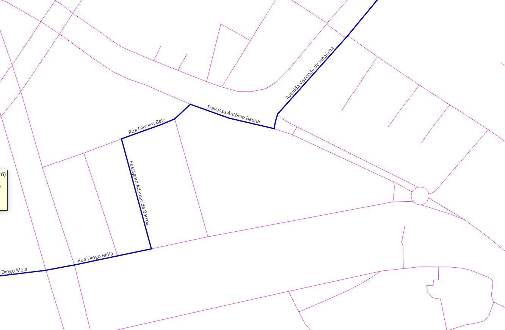
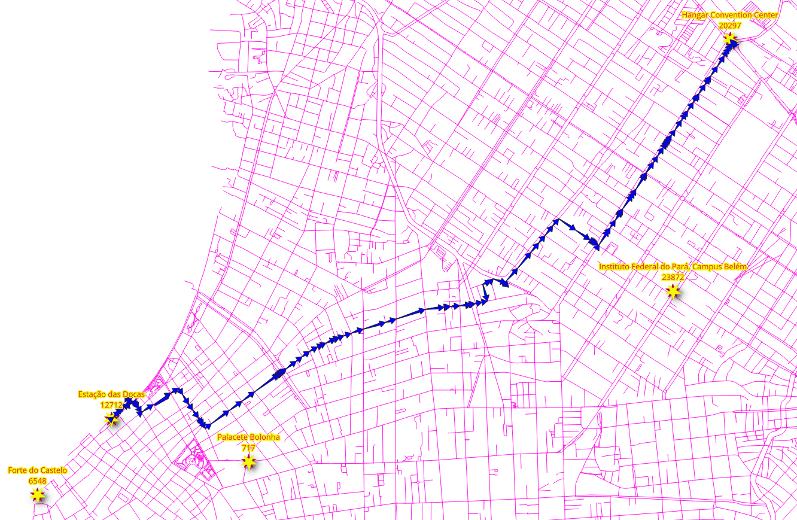
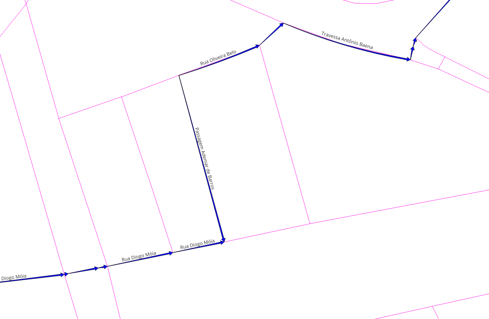

5. SQL-funktion¶

pgRouting-funktioner ger ett gränssnitt på ”låg nivå”.
När du utvecklar för en applikation på ”högre nivå” måste kraven representeras i SQL-frågorna. Eftersom dessa SQL-frågor blir mer komplexa är det önskvärt att lagra dem i postgreSQL-lagrade procedurer eller funktioner. Lagrade procedurer eller funktioner är ett effektivt sätt att linda in applikationslogik, i det här fallet relaterat till routinglogik och krav.
5.1. Kraven för ansökan¶
- En frontend behöver följande routningsinformation:
seq- En unik identifierare av radernaid- Segmentets identifierarename- Segmentets namnlength- Segmentets längdseconds- Antal sekunder för att korsa segmentetazimuth- Segmentets azimutroute_geom- Routinggeometrinroute_readable- Geometrin i läsbar form för människor.
Utformning av funktionen
Den funktion som skall skapas är wrk_dijkstra med följande inparametrar och utdatakolumner:
Parametrar för inmatning
Parameter |
Typ |
Beskrivning |
|---|---|---|
|
REGCLASS |
Den tabell/vy som kommer att användas för bearbetning |
|
BIGINT |
OSM-identifieraren för platsen för departure. |
|
BIGINT |
OSM-identifieraren för platsen destination. |
utmatningskolumner
Namn |
Typ |
Beskrivning |
|---|---|---|
|
HELTAL |
Ett unikt nummer för varje resultatrad. |
|
BIGINT |
Identifieraren för kanten. |
|
TEXT |
Namnet på segmentet. |
|
FLOAT |
Antal sekunder det tar att korsa segmentet. |
|
FLOAT |
Segmentets azimut. |
|
FLOAT |
Segmentets längd i meter. |
|
TEXT |
Geometrin i mänskligt läsbar form. |
|
geometri |
Segmentets geometri i rätt riktning. |
Observera
I de följande övningarna används endast vehicle_net, men du kan testa frågorna med de andra vyerna.
5.2. Hantering av ytterligare information¶
När programmet behöver ytterligare information, t.ex. gatunamnet, kan du ”koppla ihop” resultaten med andra tabeller.
5.2.1. Övning 1: Skaffa ytterligare information¶
{kind=link}

Problem
Från Emily Place Reserve till Auckland University of Technology, med hjälp av OSM-identifierare.
Få följande information:
seqidnamesecondslength
Lösning
Kolumnerna frågade (rad 2).
Byt namn på
pgr_dijkstraresultat till namn på applikationskrav. (rad 4).LEFT JOINresultaten medvehicle_netför att få ytterligare information. (rad 9)LEFTatt inkludera raden medid = -1eftersom den inte finns påvehicle_net
1SELECT
2 seq, id, seconds, name, length
3FROM (
4 SELECT seq, edge AS id, node, cost AS seconds
5 FROM pgr_dijkstra(
6 'SELECT * FROM vehicle_net',
7 11045833969, 9451619540)
8 ) AS results
9LEFT JOIN vehicle_net USING (id)
10ORDER BY seq;
seq | id | seconds | name | length
-----+----+---------+------+--------
(0 rows)
5.3. Geometrihantering¶
Ur pgRoutings synvinkel är geometrin en del av den ytterligare information som behövs om resultaten för en applikation. Därför JOIN resultaten med andra tabeller som innehåller geometrin och för vidare bearbetning med PostGIS-funktioner.
5.3.1. Övning 2: Geometri för rutt (läsbar för människor)¶
Problem
Rutt från Emily Place Reserve till Auckland University of Technology
Utöver den föregående övningen, skaffa
geometri
geomi mänskligt läsbar form benämndroute_readable
Tips
WITH är ett sätt att skriva hjälpsatser i större frågor. Det kan liknas vid att definiera temporära tabeller som bara existerar för en fråga.
Lösning
Routningsfrågan med namnet
resultsi en WITH-sats. (raderna 2 till 5)Resultaten från den föregående övningen. (raderna 8 och 9)
Observera
För resultatläsning finns resultatkolumnerna från föregående i en kommentar. Ta bort kommentaren för att se de fullständiga resultaten för problemet.
geombearbetas medST_AsTextför att få den mänskliga läsbara formen. (rad 12)Byt namn på resultatet till
route_readable
Den
LEFT JOINmedvehicle_net. (rad 14)
1WITH
2results AS ( -- line 2
3 SELECT seq, edge AS id, node, cost AS seconds
4 FROM pgr_dijkstra('SELECT * FROM vehicle_net', 11045833969, 9451619540)
5)
6SELECT
7 -- from previous excercise
8 seq, -- line 8
9 -- id, seconds, name, length,
10
11 -- additionally get
12 ST_AsText(geom) AS route_readable --line 12
13FROM results
14LEFT JOIN vehicle_net USING (id) -- line 14
15ORDER BY seq;
seq | route_readable
-----+----------------
(0 rows)
5.3.2. Övning 3: Ruttgeometri (binärt format)¶
{kind=link}

Problem
Rutt från Emily Place Reserve till Auckland University of Technology
Utöver den föregående övningen, skaffa
geomi binärt format med namnetroute_geom
Lösning
Frågeställningen från föregående övning används
Klausulen
SELECTinnehåller också:geominklusive namnändring (rad 9)
1WITH results AS (
2 SELECT seq, edge AS id, node, cost AS seconds
3 FROM pgr_dijkstra('SELECT * FROM vehicle_net', 11045833969, 9451619540)
4 )
5SELECT
6 -- from previous excercise
7 seq,
8 -- id, seconds, name, length, ST_AsText(geom) AS route_readable,
9
10 -- additionally get
11 geom AS route_geom
12FROM results
13LEFT JOIN vehicle_net
14 USING (id)
15ORDER BY seq;
seq | route_geom
-----+------------
(0 rows)
5.3.3. Övning 4: Riktning för väggeometri¶
{kind=link}

Visuellt, när rutten visas med pilar, kan det konstateras att det finns pilar som inte stämmer överens med ruttens riktning.
För att riktningsverkan ska vara korrekt måste slutpunkten för en geometri motsvara startpunkten för nästa geometri
Kontrollerar detaljerna i resultatet av Övning 2: Ruttgeometri (läsbar för alla)
Raderna 59 till 61 uppfyller inte detta kriterium
WITH
results AS (
SELECT seq, edge AS id, node, cost AS seconds
FROM pgr_dijkstra('SELECT * FROM vehicle_net', 11045833969, 9451619540)
),
compare AS (
SELECT seq, id, lead(seq) over(ORDER BY seq) AS next_seq,
ST_AsText(ST_endPoint(geom)) AS id_end,
ST_AsText(ST_startPoint(lead(geom) over(ORDER BY seq))) AS next_id_start
FROM results LEFT JOIN vehicle_net USING (id)
ORDER BY seq)
SELECT * FROM compare WHERE id_end != next_id_start;
seq | id | next_seq | id_end | next_id_start
-----+----+----------+--------+---------------
(0 rows)
Problem
Rutt från Emily Place Reserve till Auckland University of Technology
Fixera riktningen för geometrierna i föregående övning
geomi mänskligt läsbar form benämndroute_readablegeomi binärt format med namnetroute_geomBåda kolumnerna måste ha geometrin fixerad för riktverkan.
Lösning
För att få rätt riktning måste vissa geometrier vändas:
Att vända en geometri beror på kolumnen
nodei frågan till Dijkstra (rad 2)En villkorlig
CASE-sats som returnerar geometrin i läsbar form:Av geometrin när
nodeärkällkolumnen. (rad 11)Av den omvända geometrin när
nodinte ärkällkolumnen. (rad 12)
En villkorlig
CASE-sats som returnerar:Geometrin när
nodeärsource-kolumnen. (rad 17)Den omvända geometrin när
nodeinte ärkällkolumnen. (rad 16)
1WITH results AS (
2 SELECT seq, edge AS id, node, cost AS seconds
3 FROM pgr_dijkstra('SELECT * FROM vehicle_net', 11045833969, 9451619540)
4 )
5SELECT
6 -- from previous excercise
7 seq,
8 -- id, seconds, name, length,
9
10 -- fixing the directionality
11 CASE
12 WHEN node = source THEN ST_AsText(geom)
13 ELSE ST_AsText(ST_Reverse(geom))
14 END AS route_readable,
15
16 CASE
17 WHEN node = source THEN geom
18 ELSE ST_Reverse(geom)
19 END AS route_geom
20
21FROM results
22LEFT JOIN vehicle_net USING (id)
23ORDER BY seq;
seq | route_readable | route_geom
-----+----------------+------------
(0 rows)
Vid inspektion av några av de problematiska raderna har riktningen åtgärdats.
WITH
results AS (
SELECT seq, edge AS id, node, cost AS seconds
FROM pgr_dijkstra('SELECT * FROM vehicle_net', 5661895682, 10982869752)
),
fix AS (
SELECT seq, id,
CASE
WHEN node = source THEN geom
ELSE ST_Reverse(geom)
END AS geom
FROM results LEFT JOIN vehicle_net USING (id)
),
compare AS (
SELECT seq, id, lead(geom) over(ORDER BY seq) AS next_id,
ST_AsText(ST_endPoint(geom)) AS id_end, ST_AsText(ST_startPoint(lead(geom) over(ORDER BY seq))) AS next_id_start
FROM fix
ORDER BY seq)
SELECT * FROM compare WHERE id_end != next_id_start;
seq | id | next_id | id_end | next_id_start
-----+----+---------+--------+---------------
(0 rows)
5.3.4. Övning 5: Använda geometrin¶

Det finns många geometriska funktioner i PostGIS, workshopen har redan behandlat några av dem som ST_AsText, ST_Reverse, ST_EndPoint, etc. Denna övning kommer att använda ytterligare en funktion ST_Azimuth.
Problem
Modifiera frågan från föregående övning
Dessutom erhålls azimuten för den korrekta geometrin.
Eftersom
vehicle_netoch de andra 2 vyerna är subgrafer avways, görJOINmedways.
Lösning
Flytta den fråga som ger ytterligare information till
MED-satsen.Namnge den
additional. (rad 6)
Geometrin i tabellen
wayshar namnetthe_geom.Slutliga
SELECTuttalanden får:Beräknar azimut för
route_geom. (rad 27)
WITH
results AS (
SELECT seq, edge AS id, node, cost AS seconds
FROM pgr_dijkstra('SELECT * FROM vehicle_net', 11045833969, 9451619540)
),
additional AS (
SELECT
seq, id, seconds, name, length,
CASE
WHEN node = source THEN ST_AsText(the_geom)
ELSE ST_AsText(ST_Reverse(the_geom))
END AS route_readable,
CASE
WHEN node = source THEN the_geom
ELSE ST_Reverse(the_geom)
END AS route_geom
FROM results
LEFT JOIN ways ON (gid = id)
)
SELECT
seq,
-- from previous excercise
-- id, seconds, name, length, route_readable, route_geom
degrees(ST_azimuth(ST_StartPoint(route_geom), ST_EndPoint(route_geom))) AS azimuth
FROM additional
ORDER BY seq;
seq | azimuth
-----+---------
(0 rows)
5.4. Skapa funktionen¶
Följande funktion förenklar (och ställer in standardvärden) när den anropar Dijkstra-funktionen för kortaste vägen.
Varning
pgRouting använder sig mycket av funktionsöverbelastning:
Undvik att skapa funktioner med ett namn på en pgRouting routing-funktion
Undvik att namnet på en funktion börjar med pgr_, _pgr eller ST_
5.4.1. Övning 6: Funktion för en applikation¶
Problem
Samla allt i en SQL-funktion
funktionsnamn
wrk_dijkstraBör fungera för varje given vy.
Tillåt en vy som en parameter
En tabell kan användas om kolumnerna har rätt namn.
`sourceochtargetär i termer avosm_id.Resultatet ska uppfylla de krav som anges i början av kapitlet
Lösning
Funktionens signatur:
Ingångsparametrarna är från rad 4 till 6.
Utdatakolumnerna är från rad 7 till 14 (ej markerade).
Funktionen returnerar en uppsättning. (rad 16)
-- DROP FUNCTION wrk_dijkstra(regclass, bigint, bigint);
CREATE OR REPLACE FUNCTION wrk_dijkstra(
IN edges_subset REGCLASS,
IN source BIGINT, -- in terms of osm_id
IN target BIGINT, -- in terms of osm_id
OUT seq INTEGER,
OUT id BIGINT,
OUT seconds FLOAT,
OUT name TEXT,
OUT length_m FLOAT,
OUT route_readable TEXT,
OUT route_geom geometry,
OUT azimuth FLOAT
)
RETURNS SETOF record AS
Funktionens huvuddel:
Lägger till vynamnet på rad 7 i
SELECT-frågan tillpgr_dijkstra.Använder data för att få rutten från
källatillmål. (rad 8)JOINmedwaysär nödvändigt, eftersom vyerna är en delmängd avways(rad 25)
$BODY$
WITH
results AS (
SELECT seq, edge AS id, cost AS seconds,
node
FROM pgr_dijkstra(
'SELECT * FROM ' || edges_subset,
source, target)
),
additional AS (
SELECT
seq, id, seconds,
name, length_m,
CASE
WHEN node = source THEN ST_AsText(the_geom)
ELSE ST_AsText(ST_Reverse(the_geom))
END AS route_readable,
CASE
WHEN node = source_osm THEN the_geom
ELSE ST_Reverse(the_geom)
END AS route_geom
FROM results
LEFT JOIN ways ON (gid = id)
)
SELECT *,
degrees(ST_azimuth(ST_StartPoint(route_geom), ST_EndPoint(route_geom))) AS azimuth
FROM additional
ORDER BY seq;
$BODY$
LANGUAGE 'sql';
CREATE FUNCTION
5.4.2. Övning 7: Använda funktionen¶
Problem
Testa funktionen med de tre vyerna
Från Emily Place Reserve till Auckland University of Technology med hjälp av OSM-identifieraren
Lösning
Använd funktionen på
SELECT-satsenDen första parametern ändras beroende på vilken vy som ska testas
Namn på gatorna i rutten
SELECT DISTINCT name
FROM wrk_dijkstra('vehicle_net', 11045833969, 9451619540);
name
------
(0 rows)
Totalt antal sekunder på varje gata
SELECT name, sum(seconds)
FROM wrk_dijkstra('taxi_net', 11045833969, 9451619540)
GROUP BY name;
name | sum
------+-----
(0 rows)
Få all information om rutten
SELECT *
FROM wrk_dijkstra('walk_net', 11045833969, 9451619540);
seq | id | seconds | name | length_m | route_readable | route_geom | azimuth
-----+----+---------+------+----------+----------------+------------+---------
(0 rows)
Testa funktionen med en kombination av de intressanta platserna:
9451619540Auckland University of Technology60662678The Band Rotunda11045827672Four Points by Sheraton9452115611Sky tower11045833969Emily Place Reserve